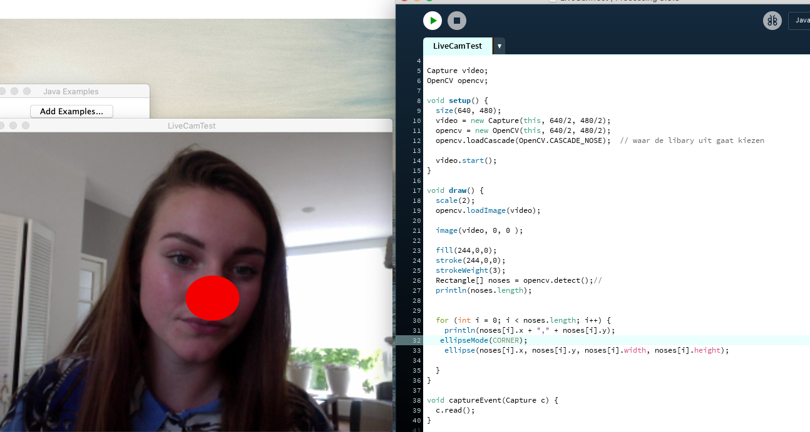

Tijdens de workshop ‘computer vision’ ging ik weer aan de slag met Processing. Hier heb ik al een keer eerder moeten werken tijdens de workshop ‘Arduino’. Processing is een open source programmeertaal en -omgeving voor mensen die willen om interactieve afbeeldingen en animaties te programmeren.
Assignment
Assignment 1 Bij het eerste assignment heb ik kennis gemaakt met het maken van een vormen. De opdracht was om, drie verschillende vormen te maken met verschillende kleuren, verschillende hoogtes en breedtes en met verschil in lijn(diktes). Dit is het eindresultaat : Assignment 2 Na verschillende ronde vormen te gemaakt te hebben is het tijd om verder te gaan met andere vormen. Het tweede assignment vraagt dan ook om verschillende vormen die niet alleen rondjes zijn, die zich bevinden op verschillende locaties en in verschillende kleuren. Dit is het geworden: Assignment 3 Bij assignment 3 werd er gevraagd om minstens twee verschillende vormen te maken die interactief zijn die verschillen van van vorm en kleur. Het leek me wel leuk om weer wat te doen met het volgen van de muis zoals je bij de voorgaande oefeningen moest doen:
Assignment
Assignment CV 1
Bij deze opdracht moest ik een bibliotheek downloaden waarna ik vervolgens aan de slag kom met gezichtsherkenning. In het voorbeeld dat werd gegeven werd er een groene vierkant om een hoofd heen getrokken > De opdracht was om van het vierkant een rondje te maken
Assignment CV 2

Nadat ik had een leuk rondje om mn hoofd heen had, was het wel tijd voor iets anders, bij de tweede opdracht moest ik er voor zorgen dat het systeem met de gezichtsherkenning een ronde bol op mijn neus zo plaatsen ! als dit niks wordt kan ik dus altijd nog als clown aan de slag...
Assignment CV 3
Bij de laatste opdracht van Computer Vison moest ik codes toevoegen van een van de voorbeelden die werden gegeven in de hoop dat er iets leuks zou gebeurden. ik heb de code
Assignment
Assignment